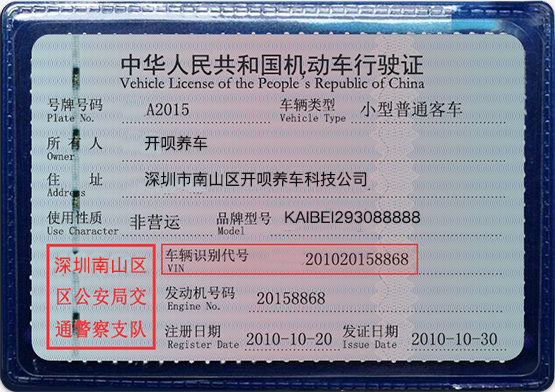
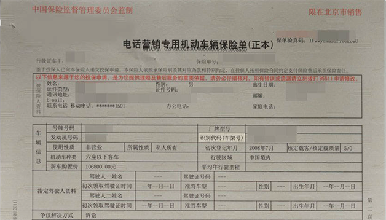
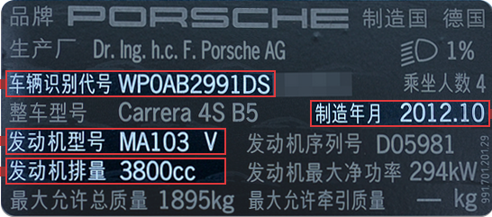
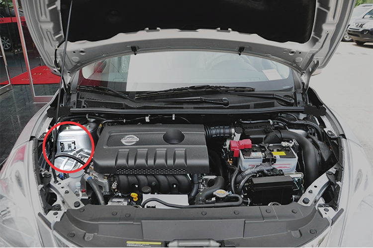
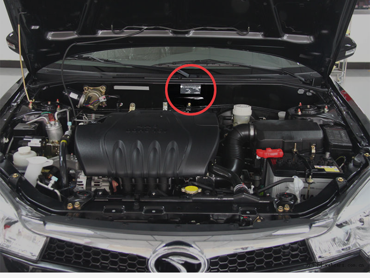
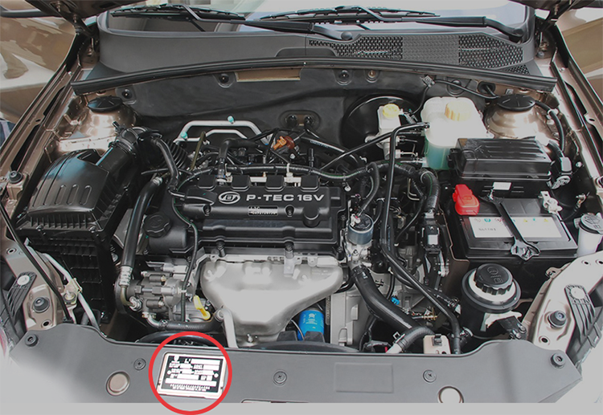
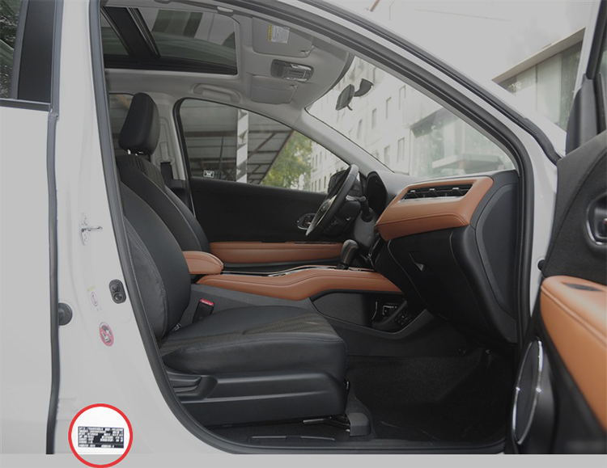

车架号(VIN码)，也就是我们平时所说的车辆识别码或大架号，总共由17位数字或字母组成，是汽车唯一的身份识别信息，好比于汽车的“身份证”。它包含了国家、生产厂家、年代、车型、发动机型号等信息，如果明白了识别码的意义，那这些信息也就一目了然了。车架号可以在车辆名牌、保险保单和机动车行驶证等上边找到。


汽车铭牌可以用来准确查找车辆的基本信息，如生产年份（制造年月）、发动机型号、排量以及车架号（车辆识别号）等。

1.车架号（车辆识别号）
俗称VIN码或17位码，包含了车辆的生产厂家、年代、车型、车身型式及代码、发动机代码及组装地点等信息。
2.生产年份
若铭牌标注201006则代表该车的生产年份（制造年月）为2010年6月
3.发动机型号
生产企业为某一批相同产品编制的识别代码，用以表示发动机的生产企业、规格、性能、特征、工艺、用途和产品批次等相关信息。
4.发动机排量
注意计量单位间的换算：1L=1000ml=1000cc例如：铭牌标注1598ml，则该车的排量为1.6L（取近似值）
通常生产年份可以在您爱车的铭牌上看到，铭牌一般在发动机舱或车门框上。
例一：发动机舱内
打开引擎盖，在靠近水箱或靠近座舱的某处。



例二：车侧门框上
打开右侧（部分车型为左侧或后排）车门，在B柱或门框其它位置。
